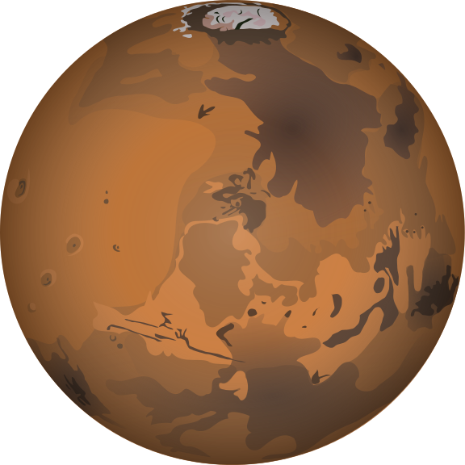

Mars | Марс
Четвёртая планета солнечной системы - Марс.
Четвёртая планета от Солнца, известная своей разрежённой атмосферой. Начиная с 1960 года, Марс активно исследуется учеными нескольких стран, включая СССР и США. Не все программы исследования были успешными, но найденная на некоторых участках вода позволяет предположить, что примитивная жизнь на Марсе существует, или существовала в прошлом.
Яркость этой планеты позволяет видеть его с Земли без всяких приборов. Причем раз в 15-17 лет, во время Противостояния, он становится самым ярким объектом на небе, затмевая собой даже Юпитер и Венеру.
Радиус почти вдвое меньше земного и составляет 3390 км, зато год значительно дольше – 687 суток. Спутников у него 2 — Фобос и Деймос.
Created by:
website: Drobkov Kirill
information: Pilyavets Dominik